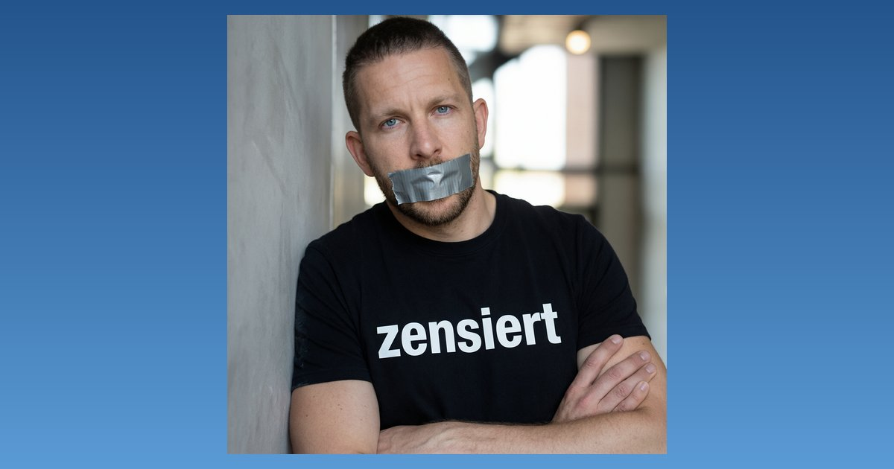

Meinungsfreiheit mit Grenzen

Eine staatliche Medienaufsicht nimmt einen reichweitenstarken Podcaster ins Visier und hofft nach eigener Aussage auf einen präventiven Effekt.
Die Landesanstalt für Medien Nordrhein-Westfalen hat den Betreiber des Podcasts „Ben ungeskriptet“, Ben Berndt, aufgefordert, ein Video mit dem AfD-Politiker Björn Höcke nachträglich zu bearbeiten. Anlass ist eine strittige Aussage Höckes zum Slogan „Alles für Deutschland“, den die Behörde als falsche Tatsachenbehauptung einordnet. Ob der Satz zutrifft, ist eine juristische und historische Frage, über die Gerichte bereits befunden haben.
Behördendirektor Tobias Schmid verteidigte das Vorgehen in einem Interview, wie ein Medienbericht festhält. Er räumte ein, bei geringerer Reichweite hätte seine Behörde wahrscheinlich nicht interveniert: Videos ohne fünfstellige Abrufzahlen ließe man „eher durchlaufen“. Vergleichbare Schreiben habe die Behörde bislang „im niedrigen zweistelligen Bereich“ verschickt.
Bemerkenswert ist der offen genannte Zweck. „Zu wissen, dass Meinungsfreiheit Grenzen hat, ist für Menschen mit so großer Reichweite ja vielleicht auch eine interessante Erkenntnis“, sagte Schmid. Eine staatsnahe Aufsicht, die Reichweite zum Kriterium macht und ausdrücklich auf Abschreckung setzt, wäre anderswo eine Debatte wert. Beim ÖRR, selbst Teil des öffentlich-rechtlichen Apparats, ist sie es nicht.